Conocido también como Hermes en la mitología griega, es el dios de los mercaderes y de la velocidad. Se le reconoce por su sombrero alado y sus sandalias con alas. En el sistema DSS, esta carta representa la agilidad y es la base para las combinaciones de látigos elementales.
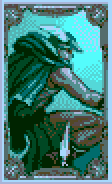Identificada con Afrodita, es la diosa del amor y la belleza. A menudo se veía envuelta en aventuras para desenredar su propia vida romántica. En el juego, la carta de Venus se utiliza para potenciar las estadísticas físicas y la obtención de suerte o experiencia.
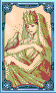El equivalente a Zeus, el rey de los dioses. Además de ser un gobernante justo, era conocido por sus constantes romances y por ser el padre de Hércules. Su carta otorga defensas poderosas y escudos protectores que giran alrededor del portador.
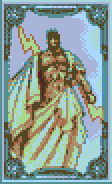Conocido como Ares, el dios de la guerra enfocado únicamente en el conflicto. Protagonizó un famoso escándalo al ser atrapado por Hefesto junto a Venus. En combate, esta carta transforma el látigo en diversas armas cuerpo a cuerpo como espadas o martillos.
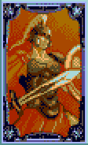Equivalente a Artemisa, la Señora de los Animales y diosa de la caza asociada con la luna. Aunque es gentil, es letal con su arco. Como hija de Zeus y hermana de Apolo, su carta en el DSS permite realizar ataques a larga distancia con proyectiles mágicos.
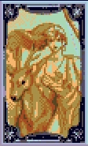Dios de las artes y la arquería, representante de la armonía y el orden. Su nombre es el mismo en la mitología griega y romana. Su carta se especializa en la creación de ataques de área y bombas explosivas para controlar grandes grupos de enemigos.
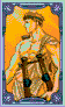Conocido como Poseidón, el malhumorado dios del mar y hermano de Zeus. Es famoso por castigar a Odiseo. Su carta otorga inmunidad y la capacidad de absorber ataques elementales para recuperar puntos de salud.
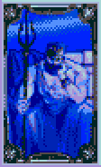Un dios perteneciente principalmente a la mitología romana, protector de la agricultura y las cosechas. En el sistema de cartas, permite invocar familiares o ayudantes que atacan automáticamente a los oponentes.
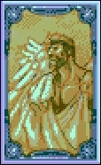También llamado Ouranos, es padre de los Titanes y personifica el cielo. En el juego, es una de las cartas más poderosas, permitiendo la invocación completa de criaturas mitológicas para limpiar la pantalla de enemigos.
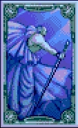El dios del Inframundo (Hades), hermano de Zeus. Tras sentirse solo en su reino, secuestró a Perséfone con el permiso de su hermano. Su carta altera las mecánicas básicas del juego, como la velocidad de carga o el uso de ítems secundarios.
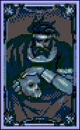A diferencia de los lagartos reales, la leyenda las vincula con el fuego, apareciendo a menudo como dragones o grandes reptiles. Ayudaban en la alquimia. Esta carta imbuye los ataques con el elemento fuego.
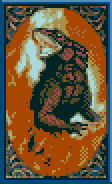Asociadas históricamente con el mal y la tentación desde el Génesis bíblico. En las combinaciones DSS, la serpiente representa el elemento hielo, permitiendo congelar a los enemigos con cada impacto.
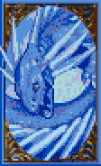Planta legendaria que supuestamente grita al ser arrancada, matando a quien la escuche. Se decía que nacía de fluidos de criminales ejecutados. Representa el elemento planta y la naturaleza en el juego.
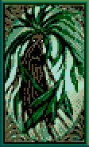De la tradición judía de Praga, un ser de arcilla creado para proteger a los débiles que cobró vida propia. Simboliza la resistencia y la tierra, otorgando bonificaciones de defensa y fuerza física.
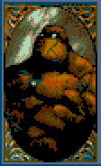Criatura nacida de un huevo de gallina incubado por una serpiente. Posee la capacidad de petrificar a los seres vivos. En combinación con las cartas de acción, permite infligir el estado de piedra.
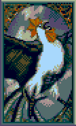Monstruo con cara de hombre, cuerpo de león y cola de escorpión cargada de veneno mortal. Esta carta representa el elemento veneno, creando nubes tóxicas o ataques que debilitan al enemigo.
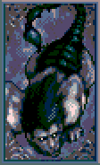Combinación majestuosa de águila y león. Es un depredador legendario que simboliza la vigilancia. Su carta suele otorgar habilidades relacionadas con el viento y el movimiento aéreo.
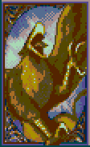De las leyendas indígenas del Pacífico Noroeste, es un ave gigante creadora de tormentas y rayos. Como espíritu guardián, esta carta imbuye los ataques con el elemento rayo o electricidad.
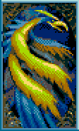Criatura pura asociada a la castidad y la sanación en la tradición cristiana. Se dice que su cuerno tiene poderes mágicos. En el juego, se utiliza para potenciar ataques de luz y habilidades curativas.

Un presagio de muerte en el folclore británico (como el "Shuck"). Ver uno indicaba una muerte inminente. Esta carta representa la oscuridad y el sacrificio, ofreciendo gran poder a cambio de reducir la salud.